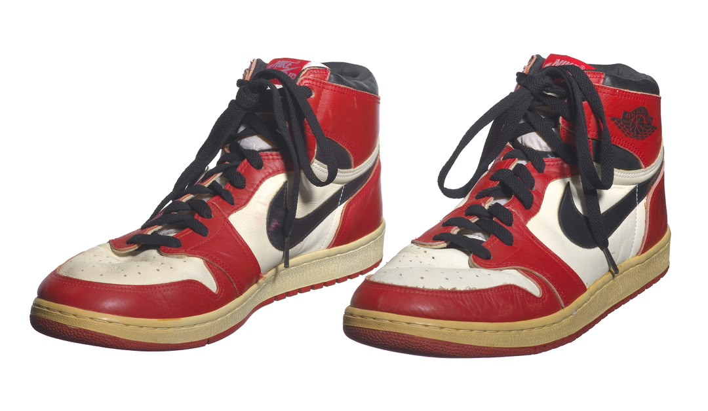
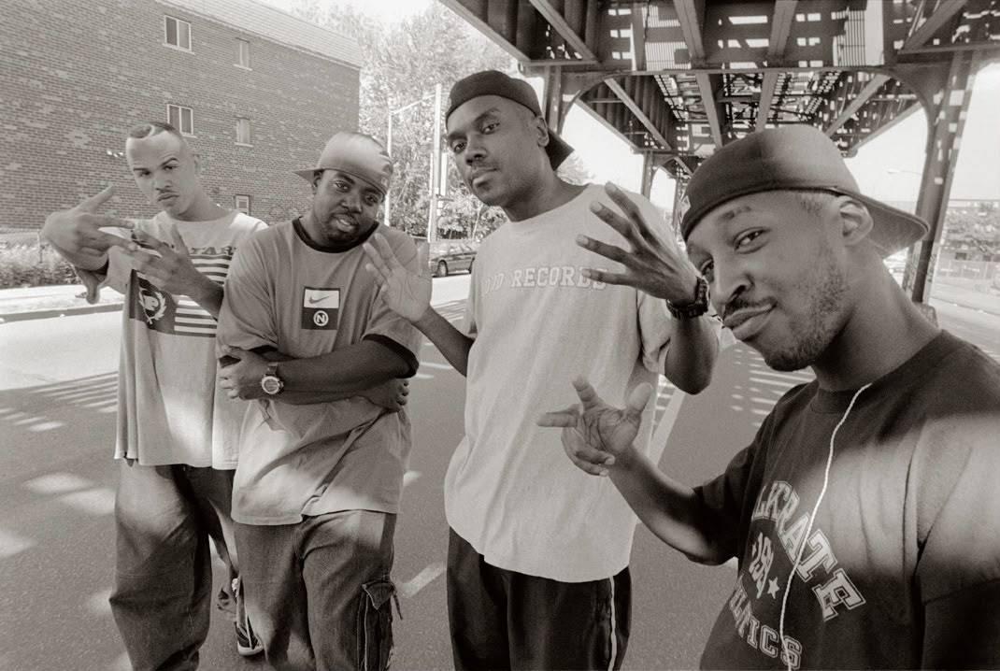

Every pair is sourced with authenticity as the priority. We focus on clear communication, considered sourcing and a process you understand before committing.
Authenticity first
Authenticity is the priority in how we source a pair.
Clear before you commit
You review the quote and terms before sourcing begins. An enquiry is not an order.
Sourced for you
We source pairs on request. Vault exhibits are examples, not listed stock.
C
Curationuration
Chosen with intention.hosen with intention.
We don't stock everything. We select pairs that matter.
Cultural impact
We ask whether a pair changed how people dressed, played, or listened. A release that defined a moment earns a place. One that was merely popular doesn't.
Rarity
Rare isn't just low numbers. We look at how many pairs survive in good condition and how hard they are to find. Scarcity that's easy to fake is a red flag, not a selling point.
Craftsmanship
We look at stitching, materials, and shape. Great design often lives in details you only notice up close.
Provenance
A pair with a traceable history, where it came from and who it passed through, is worth more than a perfect pair with none.
We turn down more pairs than we accept. If we can't verify it, trace it, or explain why it matters, it doesn't enter the vault. Our test is simple: would this pair belong in a museum?
Journal
Beyond the pair.
Stories behind the releases, the eras, and the people.

Release
The Air Jordan 1 and the "banned" shoe
How a black and red pair from 1985 changed what a basketball shoe could say.
Read more
When the Air Jordan 1 arrived in 1985, basketball shoes were mostly white and quiet. Designed by Peter Moore for a rookie named Michael Jordan, the black and red pair broke from that.
The famous "banned" story says the NBA outlawed the shoe and Nike paid the fines. The league did have a uniform rule about shoe colours, and Nike turned that tension into an ad campaign. Collectors still debate how much of the legend was marketing, but both the shoe and the story are part of why it matters.
Why it matters to us: the Air Jordan 1 is one of the most re-released sneakers ever, which also makes it one of the most widely copied. Shape, stitching, and tag details all count, so we check each pair against documented references before it enters the vault.

Era
When the streets made it their own
Sneakers became a language of culture, identity, and self-expression
Read more
Sneakers have always been about more than what we wear. They reflect where we come from, what we listen to, and the communities we belong to.
From the streets of New York to cities around the world, music, sports, and street style transformed sneakers into cultural symbols. Each generation made them its own, turning footwear into a language of identity, self-expression, and belonging
Over time, certain pairs become more than products. They become part of movements, memories, and moments that shaaped popular culture
Why it matters to us: At GVault, we believe understanding a sneaker's cultural significance makes owning it more meaningful. Knowing the actual story behind a pair helps us appreciate more than its design or resale value.
People
Tinker Hatfield, the architect behind the icons
The designer who brought architecture into the sneaker.
Read more
Tinker Hatfield trained as an architect before joining Nike in 1981. His Air Max 1, released in 1987, put the cushioning unit on display through a window in the midsole, reportedly inspired by the exposed structure of the Centre Pompidou in Paris.
A year later he designed the Air Jordan III, a pair often credited with helping keep Michael Jordan at Nike, and he went on to design many more Jordans over the years.
Why it matters to us: knowing who designed a pair, and why, explains its details, and details are what we verify. A pair is easier to check when you understand the thinking behind it.
The Vault
Worth a closer look.
Curated pairs, sourced on request.
Exhibit 01
Air Jordan 1 High "Chicago"
1985
A landmark colourway rooted in basketball history.
GVault helps you source the sneakers you want, with thoughtful curation and clarity at every step. Tell us what you're looking for, and we'll explore sourcing options before confirming the details.
Source a Pair
Your next pair starts here.
Tell us the pair you're looking for. We confirm the quote and terms before you commit. An enquiry is not an order, and no payment is taken here.
01
Tell us the pair
Share the model, size, and any notes that will help us source it. Add a colourway if you have a specific version in mind.
02
Review the quote
We'll research sourcing options, then confirm the total price, expected delivery window, and payment terms. Where available, that may include an agreed initial payment and the remaining balance when the pair arrives.
03
Decide with clarity
Review the confirmed quote and terms. Sourcing begins only after you accept them and make the agreed initial payment. Submitting an enquiry does not confirm an order.